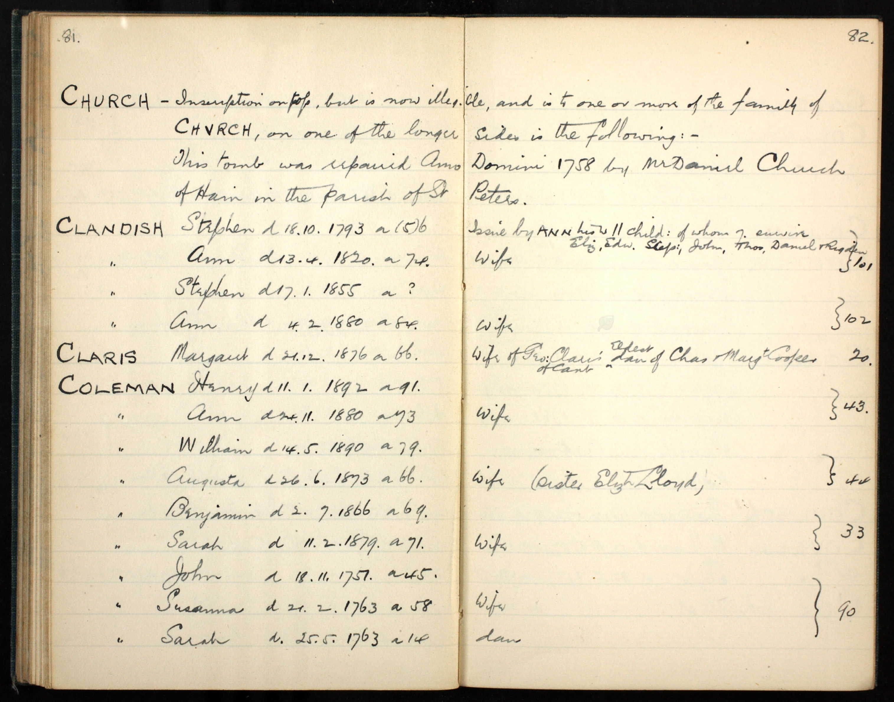
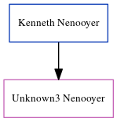

Henry Coleman c1801 - 1892
[ Home ] | [ Calendar ] | [ Surnames Index ] | [ Errors ] | [ Family History ]A gardener and domestic and the child of Moses Coleman and Elizabeth Bass, Henry Coleman, the 3 times great-grandfather of Nigel Horne, was born in Throwley, Kent, England c. 18011,2,3,4,5,6,7, was baptised there at St Michael & All Angels on 17 Jan 1802 was married twice - to Elizabeth Adams (on 14 Oct 1828 in St Nicholas-at-Wade, Kent, England) Ann Ralph (on 23 Sept 1849 in St Nicholas-at-Wade, following the death of Elizabeth on 28 Aug 1838)8. He had 3 children with Elizabeth Adams: Charlotte, Ellen and Eliza.
During his life, he was living in Sarre, Kent, England on 6 Jun 184114 following the death of his wife on 28 Aug 1838, in 1851, in 18612, on 7 Apr 186113, in 18713 and on 2 Apr 187112; at Sarre Court Cottage in Sarre on 3 Apr 188111; and at Sarre Court Road in Sarre on 5 Apr 189110.
He died on 11 Jan 1892 in Thanet, Kent, England6,7 and was buried in Sarre on 17 Jan 18929.
Parents
- Moses was born c. 1764
Children
- Charlotte was born c. 1829
- Ellen was born c. 1838
- Eliza was born in 1838
Citations
- 1841 England Census Online publication - Provo, UT, USA: The Generations Network, Inc., 2006.Original data - Census Returns of England and Wales, 1841. Kew, Surrey, England: The National Archives of the UK (TNA): Public Record Office (PRO), 1841. Data imaged from the National
- 1861 England Census Online publication - Provo, UT, USA: The Generations Network, Inc., 2005.Original data - Census Returns of England and Wales, 1861. Kew, Surrey, England: The National Archives of the UK (TNA): Public Record Office (PRO), 1861. Data imaged from the National
- 1871 England Census Online publication - Provo, UT, USA: The Generations Network, Inc., 2004.Original data - Census Returns of England and Wales, 1871. Kew, Surrey, England: The National Archives of the UK (TNA): Public Record Office (PRO), 1871. Data imaged from the National
- 1881 England Census Online publication - Provo, UT, USA: The Generations Network, Inc., 2004. 1881 British Isles Census Index provided by The Church of Jesus Christ of Latter-day Saints © Copyright 1999 Intellectual Reserve, Inc. All rights reserved. All use is subject to the
- 1891 England Census Online publication - Provo, UT, USA: The Generations Network, Inc., 2005.Original data - Census Returns of England and Wales, 1891. Kew, Surrey, England: The National Archives of the UK (TNA): Public Record Office (PRO), 1891. Data imaged from The National
- England & Wales, FreeBMD Death Index: 1837-1915 Online publication - Provo, UT, USA: The Generations Network, Inc., 2006.Original data - General Register Office. England and Wales Civil Registration Indexes. London, England: General Register Office. © Crown copyright. Published by permission of the Cont
- Kent, England, Tyler Index to Parish Registers, 1538-1874 Online publication - Provo, UT, USA: Ancestry.com Operations, Inc., 2010. This collection was indexed by Ancestry World Archives Project contributors.Original data - Frank Watt Tyler. The Tyler Collection. Canterbury, Kent, England: The Institute of Herald
- Public Member Trees Online publication - Provo, UT, USA: The Generations Network, Inc., 2006.Original data - Family trees submitted by Ancestry members.Original data: Family trees submitted by Ancestry members.
- KFHS CD17
- 1891 England, Wales & Scotland Census - Findmypast (was age 90 and the head of the household)
- 1881 England, Wales & Scotland Census - Findmypast (was age 80 and the head of the household)
- 1871 England, Wales & Scotland Census - Findmypast (was age 70 and the head of the household)
- 1861 England, Wales & Scotland Census - Findmypast (was age 58 and the head of the household)
- 1841 England, Wales & Scotland Census - Findmypast (was age 37 and the head of the household)
Media
Henry Coleman - Ann Ralph - Tyler's register

1851 UK Census

England Marriages 1538-1973 - R_848220107
England & Wales deaths 1837-2007 - BMD/D/1892/1/AZ/000094/242
Canterbury Marriages - GBPRS/CANT/M/97245482/1
England & Wales marriages 1837-2008 - BMD/M/1849/3/AM/000337/005
Canterbury Baptisms Transcription - GBPRS-CANT-B-96169467
1891 England, Wales & Scotland Census - GBC/1891/0005854519
1881 England, Wales & Scotland Census - GBC/1881/0004821986
1871 England, Wales & Scotland Census - GBC/1871/0014271660
England Births & Baptisms 1538-1975 - R_883294490
1841 England, Wales & Scotland Census - GBC/1841/0013978869
Family Tree
Map
Generated by ged2site. Last updated on Jul 3, 2024
Known Issues
Residence record for 1851 contains no citation